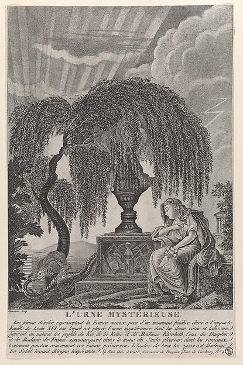
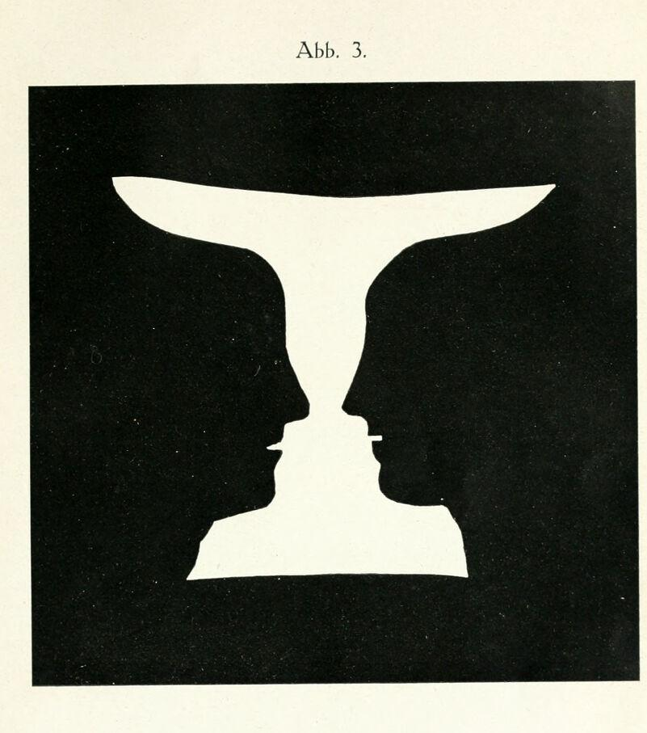
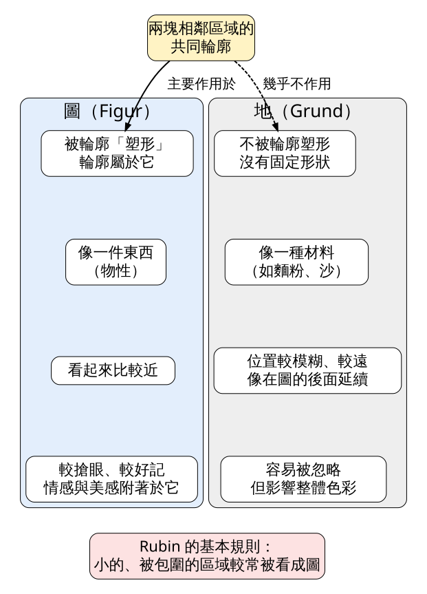
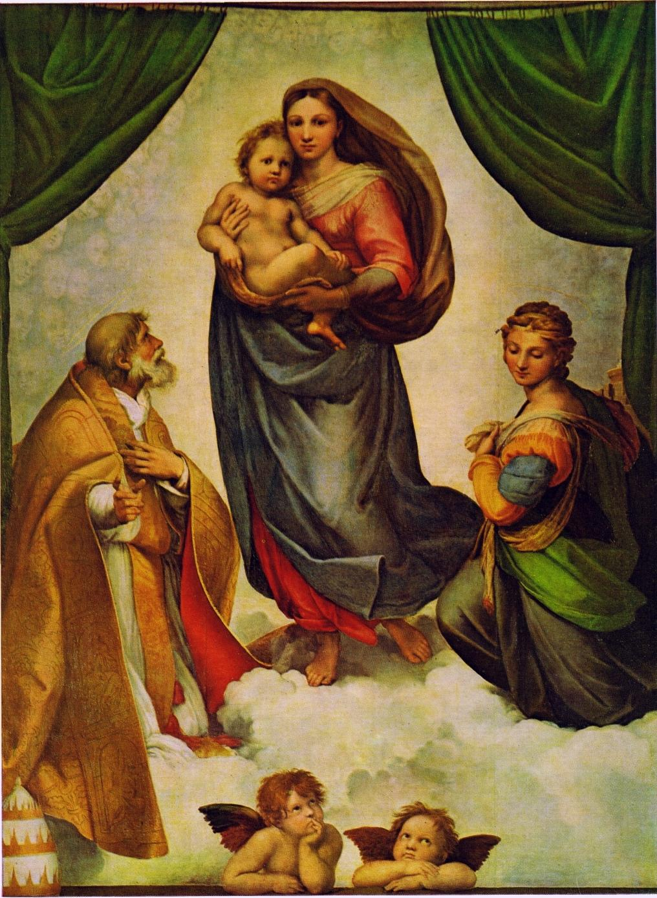

Edgar Rubin 在 1915 年的博士論文裡指出：兩塊區域共用一條邊界時，這條邊界只「屬於」其中一塊。擁有邊界的那塊成為「圖」，有形狀、像一件東西；另一塊退成「地」，看起來在圖的後面繼續延伸。今天用這個說法讀一張 1916 年的攝影，並在自己拍照時練習決定誰當圖。
史料 1793 年路易十六與瑪麗・安東妮相繼被送上斷頭台。之後幾年，巴黎流通著一種版畫：一棵垂柳、一座墓碑、碑上一只甕（見圖 1）。大都會藝術博物館藏有一張，由 Pierre Jean Joseph Denis Crussaire 刻製，標題《L'Urne mystérieuse》（神祕的甕），館方定年 1793 至 1800 年。
版畫下方的法文說明寫得很坦白：甕的兩側與頂端「au naturel」呈現國王、王后與伊莉莎白夫人的側臉，王太子與公主的側臉則藏在柳樹的樹幹裡。你盯著甕看，看到的就是一只甕。把注意力移到甕柄兩旁的淺色空白，兩張面對面的側臉才浮出來。

圖 1｜《神祕的甕》。甕柄左右兩側的空白，輪廓正是兩張相對的側臉。來源：Pierre Jean Joseph Denis Crussaire，The Mysterious Urn, with the hidden silhouettes of the French royal family，點刻版畫，1793–1800，大都會藝術博物館藏。授權：Public domain（Met Open Access），來源頁面
史料（原典註腳） 一百多年後，Rubin 在論文德文版（1921）第 32 頁的註腳裡記了兩件事。一是他曾在一間珍奇收藏室裡見過運用同一個把戲的花瓶。二是 Lillien J. Martin 發表在《Zeitschrift für Psychologie》第 70 卷的論文，第 214 頁印了一張花瓶銅版畫，把瓶腳周圍的區域當成圖來看，就會看到路易十六的肖像。Rubin 沒有說自己的圖是從這些東西得來的，我們也無法確認 Martin 印的是不是圖 1 這一張。能確定的只有一件事：把臉藏在空白裡，在 Rubin 之前早就有人做過。
經典理論 Edgar Rubin，《Synsoplevede Figurer: Studier i psykologisk Analyse》（哥本哈根：Gyldendal，1915），同年 7 月在哥本哈根大學答辯。德文版《Visuell wahrgenommene Figuren》1921 年出版，本課的原文查核依德文版。
研究怎麼開始的 依 Pind（2012）的整理，Rubin 從 1911 年起在哥廷根 G. E. Müller 的實驗室待了約兩年。Müller 交給他的題目是記憶：讓受試者記住一批無意義的紙板圖形，之後測驗認不認得。Rubin 發現受試者看這些圖形時，圖與地會互相翻轉，而且事先指示受試者把哪一塊當成圖，會影響之後的辨認成績。他後來放下記憶研究，專心研究圖與地。（依二手文獻：Pind 2012）德文版第 3 節確實保留了這類實驗：先讓受試者把某塊區域當圖記住，測驗時改把它當地，看還認不認得。
那只杯子 論文的第 3 張附圖是一只略微歪斜的高腳杯（見圖 2）。Rubin 說，拿給受試者看，對方通常回答這圖沒什麼特別。請他們改把包圍杯子的黑色區域當成圖，做到的人常帶著一點驚訝的笑說：這是兩張對望的臉。

圖 2｜Rubin 原書的 Abb. 3，後人稱為「魯賓之杯」或「魯賓花瓶」。來源：Edgar Rubin，Visuell wahrgenommene Figuren，1921，附圖 3（Internet Archive 掃描本，多倫多大學 Robarts 圖書館藏書）。授權：Public domain（Internet Archive 標示 NOT_IN_COPYRIGHT；Rubin 卒於 1951 年），來源頁面
核心命題 Rubin 在第 5 節引進「輪廓」，定義為兩塊區域共同的邊界。他的基本命題是：兩塊區域相鄰，一塊被經驗為圖、一塊為地時，從共同輪廓會發出一種「塑形作用」（formendes Wirken），只作用在其中一塊，或對其中一塊作用得比較強。受這個作用最多的就是圖。他自己補了一句保留：人感覺不到這個作用本身，只感覺到結果，那塊面積變得有形狀了，所以「塑形作用」最好當成比喻。受試者描述地的時候，常說地好像在圖的後面延伸過去。
圖與地的其他差別 後面幾節逐項比較（見圖 3）。第 6 節說圖有「物性」，像一件個別的東西；地則像麵粉、沙、鐵這類「材料」，沒有個體。第 8 節說圖通常被看得比較近。受試者 Lempicka 夫人把黑色區域看成圖時，有時覺得綠色的地在一公尺外；另外兩位受試者覺得只差幾公釐。第 9 節說圖比較搶眼、比較常被記住，描述時通常先說圖。第 11 節給出他的基本規則：兩塊顏色不同的均勻區域，一塊大很多並且包住另一塊，那麼被包住的小區域很可能被看成圖。

圖 3｜Rubin 描述的圖與地差異。本課程依 Rubin，Visuell wahrgenommene Figuren（1921）第 5、6、8、9、10、11 節繪製。授權：本課程自製圖解。
談到藝術 第 10 節討論情感，Rubin 在這裡談到繪畫。他認為美感印象附著在圖上，原本設計成背景的區域一旦被看成圖，形狀通常不好看。他舉的例子是拉斐爾的《西斯汀聖母》：要是不小心把背景看成圖，會看到一隻怪異的龍蝦螯夾住聖芭芭拉，另一把鉗子似的東西抓住聖西斯篤（見圖 4）。他接著寫，地在圖後延伸的那種直接印象，在建築與繪畫裡作用不小。

圖 4｜試著把左下的聖西斯篤、右下的聖芭芭拉與聖母之間的雲天當成「圖」，看看 Rubin 說的鉗子在哪裡。來源：Raffaello Sanzio（拉斐爾），Sistine Madonna，約 1512–1513，德勒斯登歷代大師畫廊藏。授權：Public domain，來源頁面
實證研究 Rubin 的證據主要是少數受試者的細緻自述。Wagemans 等七位學者 2012 年在《Psychological Bulletin》的百年回顧，把凸起、對稱、面積小、被包圍列為決定圖地的古典構形線索，並另立一節整理過去經驗、注意力與預期的影響。
Paul Strand 的〈Abstraction, Porch Shadows〉（又名〈Porch Shadows〉、〈Abstraction, Twin Lakes, Connecticut〉），1916 年。芝加哥藝術博物館的說明是：那年夏天 Strand 在康乃狄克州 Twin Lakes 的家族小屋，想把他對立體派的理解轉成攝影。他放棄了照片慣有的直立視角，讓桌子看起來翹了起來，用影子做出強烈的斜線。這張照片刊在 Stieglitz 的《Camera Work》最後一期。大都會藝術博物館藏有一張銀鉑印相，32.8 × 24.4 公分。（史料）
兩家館方都沒有把這張照片的圖檔標示為公有領域，本課不放圖。請開啟芝加哥藝術博物館頁面或大都會藝術博物館頁面對照著讀。
先看畫面有什麼。右下方是一張圓桌的桌面，邊緣畫成一道大弧線。桌面以外的上半部與左側是另一個平面，上面排著一道道斜的亮條與暗條，亮暗交替。右下角的桌面上還有一塊很大的亮三角形。
哪些是「東西」？照常理推，暗條是門廊欄杆的影子，亮條只是欄杆之間漏進來的陽光，欄杆本身幾乎不在畫面裡。可是亮條比暗條窄，邊緣又銳利，很容易被看成一根根斜靠著的白色木條。這正好符合 Rubin 第 11 節的規則：比較窄、被兩側包夾的區域傾向成為圖。光成了東西，真正的影子退成地。
輪廓屬於誰。亮條碰到桌緣就轉了方向：在桌外是陡的斜線，跨上桌面後變得接近水平。這個轉折告訴眼睛，弧線是桌子的邊，不是條紋的邊。弧線歸桌面所有，桌面就成了一個有形狀的「圖」，條紋平面則像在桌子底下、後面繼續延伸。Rubin 說的「地在圖後延伸」，在這裡由條紋的斷折來提示。
沒有地平線可靠。Strand 放棄了直立的視角，又把畫面裁得很緊，照片裡沒有地板與牆的交界，也沒有任何可以判斷上下的物件。觀者無法用「地板在下、牆在後」的生活常識排出前後，只能靠輪廓與面積判斷誰是圖。那塊大亮三角形就因此不穩定：它可以是落在桌上的一片光，也可以看成一張平放的白紙。
攝影師沒有辦法像畫家那樣把背景塗掉，能用的工具是取景、角度和光線。Strand 用取景拿掉影子的來源，讓影子沒有主人，影子就有機會變成圖。
史料 日本文樂（人形淨瑠璃）的一尊人偶由三個人操作。紐約日本協會 2024 年〈Bunraku Backstage〉展覽手冊的說明是：主遣（omo-zukai）資歷最深，操作頭部與右手，通常穿黑色和服與袴，露出臉；左遣操作左手，足遣操作雙腳，兩人穿黑色棉布衣（kurogo），頭戴黑色頭巾（zukin）完全遮住臉，以免分散觀眾對人偶的注意。手冊也說，到 1734 年人偶已長到約真人的三分之二大。聯合國教科文組織的介紹則說，操偶師在觀眾面前、在一道齊腰高的屏幕後面演出，觀眾看得見他們。
用 Rubin 的說法讀：三位操偶師的身體比人偶大得多，就站在舞台上，照理應該最搶眼。但他們一身沒有花紋的黑，臉被遮住，在暗色的舞台上像一片連續的材料，缺少讓人當成「一件東西」的細節。人偶則有雕刻的臉、彩色的衣裳和清楚的輪廓，又被黑衣包圍在中間，正是 Rubin 規則裡那塊「被包住的小區域」。主遣露出的臉是一個測試點：下次看文樂影片時，留意你的眼睛多久會忘掉那張臉。
誤解一：圖地能互換的設計比較高明。心理學家 Benussi 曾主張，圖與地容易互換的圖樣有特別的美感價值，因為輪替可以讓美感不致減弱。Rubin 在第 10 節的註腳裡明白表示不同意：單獨看這種圖樣，他覺得「zu unruhig」（太躁動）。他也留了一句：放在整體裡，某一處有點不安定，可能正有用處。（經典理論）
誤解二：地就是沒用的空白。Rubin 在同一節寫，地在美感上絕不是無關緊要的。裝飾和地的大小要相稱，地的形狀要和裝飾的形狀有所呼應，地對色彩和諧的影響也很大。他舉的例子是哥本哈根美術館裡魯本斯畫的 Yrselius 院長肖像：白衣人物配上濃烈的紅色背景。（經典理論）
誤解三：眼睛先切出圖與地，之後才認出那是什麼。這是很長一段時間的預設。Peterson 與 Gibson（1994）讓受試者看兩塊共用邊界的區域，畫面只閃 14 到 100 毫秒，隨即被遮蔽。結果對稱與「看起來像不像某個熟悉物體」都會影響受試者把哪一塊報告成圖，兩者的效果在 28 毫秒就出現，而且熟悉度沒有壓過對稱。作者推論，辨認物體的處理可能在圖地確定之前，就同時作用在邊界的兩側。（實證研究）
看（5 分鐘） 找一處有規律影子的地方：鐵窗、百葉窗、樓梯扶手在地上或牆上的影子都可以，陰天就改看樹枝對著天空。先照平常的方式看，再刻意把亮的空隙當成「東西」，數一數這種看法能撐幾秒才翻回去。
做（10 分鐘） 用手機拍四張。
回顧（5 分鐘）
來源 | 類型 | 查核日期 |
Rubin, E.（1921）《Visuell wahrgenommene Figuren: Studien in psychologischer Analyse》，København: Gyldendal（1915 年丹麥文版之德譯）。第 3、5、6、8、9、10、11 節，第 32 頁註腳，附圖 3。Internet Archive 掃描本 | 經典理論；附圖授權頁 | 2026-11-06 |
Pind, J. L.（2012）〈Looking back: Figure and ground at 100〉，《The Psychologist》，British Psychological Society。BPS 網頁 | 史料（二手文獻） | 2026-11-06 |
Crussaire, P. J. J. D.，《The Mysterious Urn, with the hidden silhouettes of the French royal family》，1793–1800。大都會藝術博物館典藏頁（另以 Met Open Access API 確認公有領域） | 史料；圖片授權頁 | 2026-11-06 |
Raffaello Sanzio，《Sistine Madonna》圖檔與授權。Wikimedia Commons | 圖片授權頁 | 2026-11-06 |
Wagemans, J. 等（2012）〈A century of Gestalt psychology in visual perception I: Perceptual grouping and figure–ground organization〉，《Psychological Bulletin》138(6), 1172–1217。PMC 全文 | 實證研究（回顧） | 2026-11-06 |
Peterson, M. A. & Gibson, B. S.（1994）〈Must figure-ground organization precede object recognition? An assumption in peril〉，《Psychological Science》5(5), 253–259。APS 摘要頁 | 實證研究 | 2026-11-06 |
Paul Strand，《Porch Shadows》，1916，銀鉑印相。芝加哥藝術博物館典藏頁（以館方 API 讀取說明與授權欄位） | 史料 | 2026-11-06 |
Paul Strand，《Abstraction, Twin Lakes, Connecticut》，1916，32.8 × 24.4 公分。大都會藝術博物館典藏頁（以 Met Open Access API 確認未列為公有領域） | 史料 | 2026-11-06 |
〈Abstraction, Porch Shadows〉條目（拍攝地點與各館藏名單，僅作索引）。Wikipedia | 索引用 | 2026-11-06 |
Japan Society（2024）〈Bunraku Backstage〉展覽手冊，October 4, 2024 – January 19, 2025。PDF | 史料 | 2026-11-06 |
UNESCO，〈Ningyo Johruri Bunraku Puppet Theatre〉人類非物質文化遺產代表作名錄。UNESCO 頁面 | 史料 | 2026-11-06 |